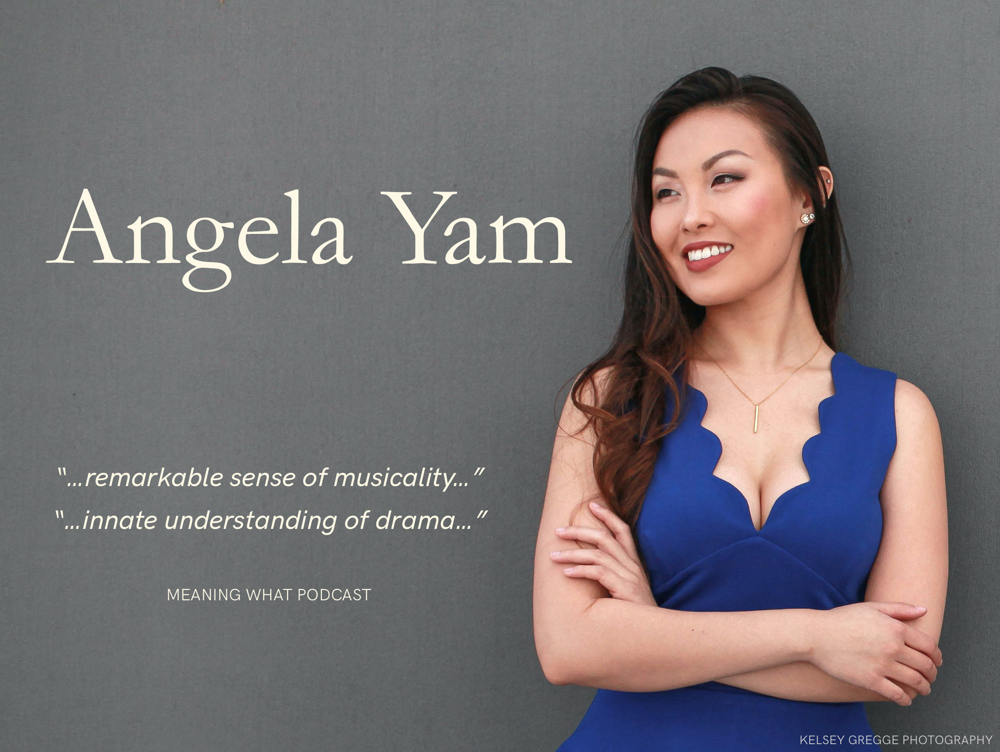

Praised as “radiant” by the Boston Globe, Angela Yam is renowned for her impeccable musicianship and fierce stage presence. Her 2025–26 season features returns to Boston Lyric Opera, Heartbeat Opera, Asia Society Texas/Houston Grand Opera, and Guerilla Opera, as well as debuts at Wolf Trap Opera and the Glimmerglass Festival, and compositional debuts with Catalyst New Music and Boston Opera Collaborative.
This summer, Yam joins Wolf Trap Opera as a Filene Artist, making her company debut as Clorinda in La Cenerentola. In Fall of 2026, she returns to her home company of Boston Lyric Opera for their 50th anniversary season, performing Stella in Previn’s A Streetcar Named Desire.
Last season, Yam made her Glimmerglass Festival debut as Celeste 1 in Sunday in the Park with George, a production that won the International Opera Awards for Best Musical. As a 3rd-year Boston Lyric Opera Emerging Artist, she performed Apparition 2 in Verdi’s Macbeth and Hortensia in Donizetti’s The Daughter of the Regiment, covering the title role. She returned to Heartbeat Opera for their 10th annual Drag Opera Extravaganza, playing Cio-Cio-San in Orgy and Bess, and joined West Edge Opera for the workshop of Weinberg & Fleischmann’s Claude and Marcel.
Career highlights include her Boston Lyric Opera debut as Ismene in Mozart’s Mitridate, hailed as “a sweetly poisonous, scene-stealing schemer with a sultry sparkle in her voice,” awarded the 2024 Best Breakout Performance in a Supporting Role by the Boston Globe, and featured on the December cover of Opera Magazine.Yam’s performances in Baroque repertoire have been praised for her “gleaming clarity” and “fitting rococo brilliance.” Her triumphant return to the title role of Cavalli’s La Calisto with Opera Memphis was featured at the 2025 Opera America National Opera Conference, where she was praised as “a consummate stage animal…excellent as the mistreated nymph.” Her debut with Boston Baroque as Diana in Gluck’s Iphigénie en Tauride was similarly hailed as “radiant,” and she returned to the company for their New Year’s Eve Concert as Liesgen in Bach’s Coffee Cantata.
World premieres included her return to Opera Parallèle as Orsia in David Hanlon & Stephanie Fleischmann’s The Pigeon Keeper, a role for which Parterre Box praised “Angela Yam brought clarity and poise in her bright lyrical voice, believably sounding like a precocious 12-year-old. Hanlon wrote a punishingly high tessitura for Orsia which Yam performed with aplomb.” She made her company debut with Opera Parallèle as an “adorable and vocally excellent” Mumei in Kenji Oh & Kelley Rourke’s The Emissary. Other premieres include Siren 1 in Ellis Ludwig-Leone & Karen Russel’s The Night Falls (BalletCollective), Agave (cover) in John Corigliano’s The Lord of Cries (Santa Fe Opera) and the Bird in Jones & Tinley’s ICELAND (Overtone Industries), a role for which she was described as “stellar…a Puccini-esque soprano with incredible highs” (Poison Put to Sound).
Yam’s solo concert appearances include the New York City Ballet (Mendelssohn: A Midsummer Night’s Dream), Opera Saratoga (Rossini: Petite messe solennelle), and Music at Co-Cath (Monteverdi: Vespro della Beata Vergine). As an ensemble singer, Yam has sung with the New York Philharmonic Chorus, Ekmeles Vocal Ensemble, and Nightingale Vocal Ensemble.
Yam won the New York City District in the 2023 Metropolitan Opera Laffont Competition, and her self-directed Visual Recital was awarded 3rd place in the 2022 American Prize Competition. She composed for and directed Nightingale Vocal Ensemble’s award-winning 2023 choral opera ADRIFT. She has been an Apprentice Artist at Boston Lyric Opera, Glimmerglass Festival, Santa Fe Opera, Chautauqua Opera, Fargo-Moorhead Opera, and Opera Saratoga, and received a Graduate Diploma from New England Conservatory.
As a composer, Yam’s output includes art songs, chamber/dance works, and operas for Nightingale Vocal Ensemble, Catalyst New Music, Boston Opera Collaborative, songSLAM NYC, Robert Moses’ Kin, SMFA at Tufts, and her lo-fi-classical-meets-neo-soul band, DREAMGLOW.
April 24-May 3, 2026 | Emerson Colonial Theatre, Boston, MA
Angela Yam returns to Boston Lyric Opera for a new English adaptation of Donizetti’s The Daughter of the Regiment, performing the role of Hortensia and covering Marie.
“Laughter meets revolutionary spirit in BLO’s staging of Donizetti’s glorious comedy. Inspired by the life of Deborah Sampson, the Massachusetts revolutionary who disguised herself as a man to fight for independence, this production transports us to Revolutionary-era Boston, telling a heartfelt tale of love and loyalty to celebrate America’s 250th anniversary. With a new English dialogue by Kirsten Greenidge, it’s a patriotic toast to America at 250—and to the rebels who shaped it.”
May 9, 2026 | Pao Arts Center, Boston, MA
Angela Yam sings a recital of Chinese art songs with collaborators Leona Cheung, Zizhao Wang, and Hana Yiu at the Pao Arts Center.
June 18, 21, 25, 27, 2026 | The Barns at Wolf Trap, Vienna, VA
Angela Yam makes her company debut with Wolf Trap Opera as a Filene Artist, performing the role of Clorinda in Rossini’s La Cenerentola.
“Rossini’s sparkling adaptation of the classic fairy tale is not about a glass slipper, but two diamond bracelets and the triumph of virtue over appearance. This enchanting opera buffa is a whirlwind of mistaken identities and genuine love. With exhilarating music famous for its demanding vocal fireworks, this witty Cinderella is a captivating theatrical delight.”
November 5, 6, 8, 2026 | Emerson Cutler Majestic Theatre, Boston, MA
Angela Yam returns to her home company at Boston Lyric Opera for their 50th anniversary season, performing the role of Stella in André Previn’sA Streetcar Named Desire.
“Conducted by Daniela Candillari and directed by Patricia Racette – a New Hampshire native who had an early-career highlight in BLO’s 1992 The Tales of Hoffmann and who now leads Opera Theatre of Saint Louis – this adaptation of Tennessee Williams’ Pulitzer Prize-winning American theatre classic is a lyrical, intimate, and emotional work that explores brutal class conflict and collisions between illusion and harsh reality. Cast includes Brittany Renee (Blanche), Angela Yam (Stella), Thomas Glass (Stanley), and Brenton Ryan (Mitch), with the BLO Orchestra. Designed by Andrew Boyce (Scenic), Amanda Gladu (Costumes), Eric Southern (Lighting), and Kylee Loera (Projections).”
January-February, 2026 | Boston, MA
Angela Yam's first opera Threesome, a collaboration with librettist Susan Bywaters, was commissioned as part of Boston Opera Collaborative’s 2026 Opera Bites, before the company sadly folded in December of 2025. The creatives are recording the opera, which will be available for distribution in Spring of 2026.
September 28, 2025 | M.I.T.’s Killian Hall, Boston, MA
Angela Yam debuted her first art song cycle Gaia Builds the World, with lyrics by Clare Fuyuko Bierman, performed by soprano Dana Lynn Varga and pianist Brendon Shapiro.
“Join us for an exciting afternoon of world premiere performances - the culmination of months of creative collaboration! FUSE: Collaborations in Song is a uniquely collaborative song-development program for singers, composers, and poets that results in the creation of amazing new songs that are tailor-made for the singers who will give their world-premiere performance!”
“Opera Bites is Boston Opera Collaborative’s two-year-long micro opera commissioning program and post-educational residency, culminating in a final performance of compelling 10-minute "bite-sized" operas.”
December 21, 2024 | Cathedral Church of St. Paul, Boston, MA
Angela Yam’s original choral composition emPire premieres at Nightingale Vocal Ensemble’s Solstice concert.
“Nightingale Vocal Ensemble presents an immersive concert that blends old-world traditions, folklore, and the timeless magic of solstice rituals. Many solstice celebrations centered on sacred fires, calling the sun back to the earth—renewal, protection, and the promise of Spring. This concert explores night’s place in our lives: a time for sharing stories, singing songs, confronting fears, and encountering both the divine and the terrible. Expect diverse music—beautiful, folk, strange, and lovely—movement through the space, and a communal sing-along around the fire. Come keep warm around the fire with us on the longest night of the year. This project is produced by Nicholas Ford.”
January 18, 2025 | Boston Center for the Arts Cyclorama, Boston, MA
Angela Yam leads Sound Artists in fully improvised sound-making for Olivia Moon’s ACTivate Residency at the BCA Cyclorama.
“For her ACTivate residency, Olivia, along with the expertise and assistance of Jaina Cipriano, plans to decorate the Cyclorama with portable poles, pole dancers, projection, and other sculptural components. Throughout the week, the dancers will pull from experimental practices of contemporary dance to create improvisational structures within pole dance. The residency will culminate in an informal showing of this interdisciplinary pole dance investigation.”
January 29 - April 20, 2025 | SMFA at Tufts, Boston, MA
Angela Yam and Nathan Halbur’s 10 musical miniatures play as part of Kledia Spiro’s exhibition “Press and Sniff” in an archive and/or a repertoire at the School of the Museum of Fine Arts at Tufts University.
“an archive and/or a repertoire explores the liminal spaces that emerge between archives and ephemeral new media. Featuring the Mobius, Inc. Records —the administrative archive of the Boston-based Mobius Artists Group—this exhibition serves as a local laboratory, delving into materials from Mobius’ experimental performances, new media projects, sound works, dances, and installations.”
March 14-16, 2025 | Z Space, San Francisco, CA
Angela Yam and collaborators Yayoi Kambara, Loni Landon, and Janesta Edmonds create a world premiere dance piece, The Curse of Jezebel and Ascension, for Robert Moses’ Kin’s "New Legacies: One Acts" series. Angela Yam composes and records the music for this piece.
“RMK presents three original works choreographed by three guest artists. Each piece features a collaboration with both a composer and a writer, resulting in dynamic and multi-disciplined works. These triptychs are presented as part of RMK's ‘New Legacies: One Acts’ series, a platform for emerging and established voices in contemporary dance.”
As a performer and composer, I am inspired by the ways that each art form requires both attention to the history and traditions of a given medium, as well as individual artistic expression in putting a piece together. As a performer, I interpret the music and intention that a composer has scribed into a score; as a composer, I trust the performer(s) to expand upon the intention of a prescribed score. This collaborative process provides a ripe, fertile ground for artistic connection across mediums and between individual artists, in a process that I find builds collaborative connective tissue, fosters artistic community, and expands my understanding of humanity. Because of this, I am most drawn to themes of connection (family, feminist and LGBTQIA+ stories, liberation through self-expression, etc.) and the ways in which that connection is disrupted (generational and cultural differences, climate change, death, loss, etc.). As a composer, I take care in choosing my themes and collaborations to find projects that speak to me as an individual, in which I can expand a narrative of progress and individual/societal healing.
| Send me an email at: |
| angelayamsoprano@gmail.com |
| Follow me on: |